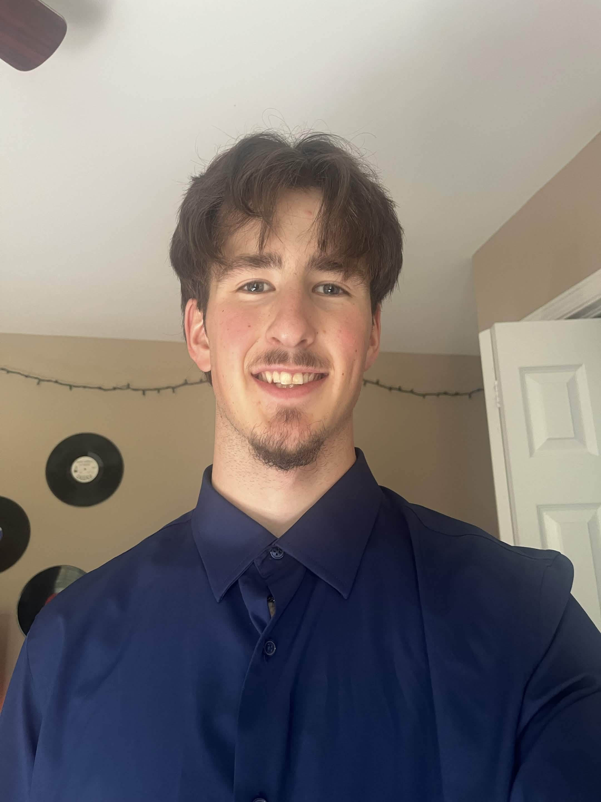

New Brunswick Community College
IT: Software Development — developing skills in programming, databases, application design, and software engineering.
I'm Ryan MacDonald, an IT: Software Development student who likes turning ideas into real, working projects.
const passion = 'building';
while (curious) {
learn();
create();
}
I'm Ryan MacDonald, a second-year IT: Software Development student at New Brunswick Community College, graduating in 2027.
I enjoy building practical software — from desktop applications and database-backed tools to websites and small games. C# and .NET are some of my favorite tools, and I'm especially interested in backend development.
My favorite way to learn is by trying things myself, running into problems, and figuring out how to solve them. Outside programming, I'm also into music and creating projects with my band, BLISS.
A few things I've built, broken, fixed, and learned from. Pick a project from the menu to see its featured demo.
A desktop application for musicians to organize and play click tracks for rehearsals and live performances. Built with C#, Windows Forms, and NAudio. Replace this description with your final project write-up.
Every project has its recipe. Here are the languages, frameworks, and tools I reach for when building something new.
From application logic to building interfaces and learning lower-level programming.
Building applications, working with databases, and connecting the pieces.
The everyday tools that help me write, debug, version, and ship code.
IT: Software Development — developing skills in programming, databases, application design, and software engineering.
Building desktop applications, web projects, and programming experiments to improve through hands-on experience.
Working on the band's website and exploring how software and music can work together.
Have a project idea, a job opportunity, or just want to connect? My inbox is open.